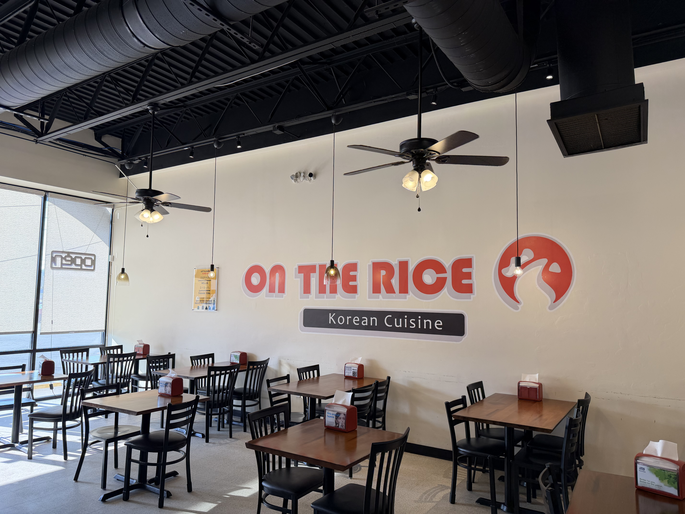
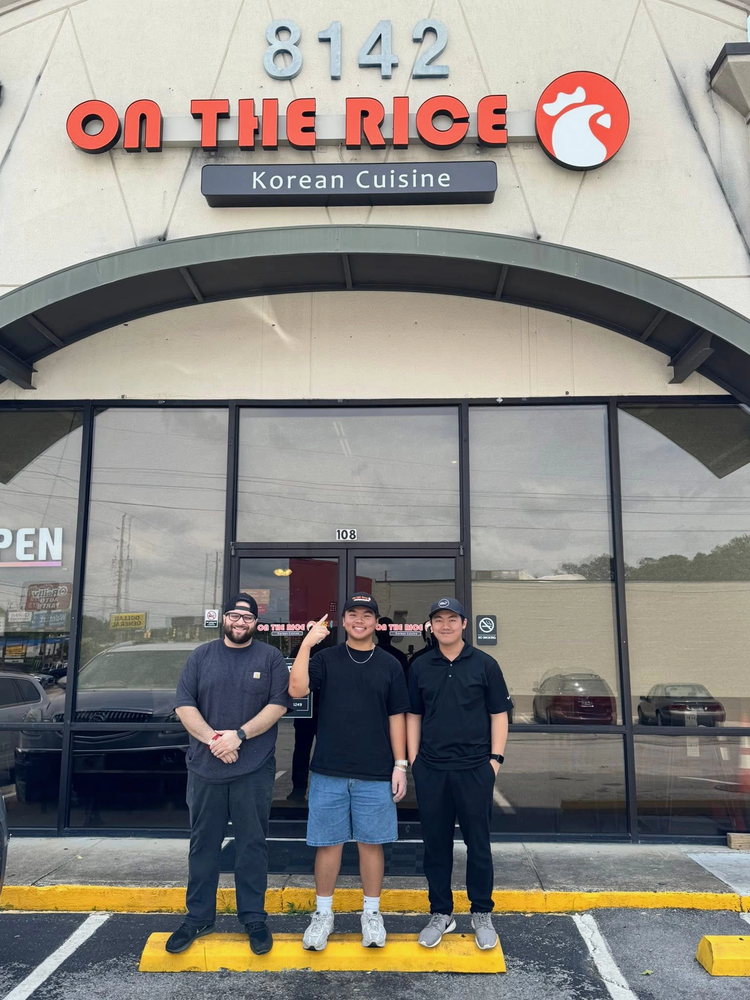

Welcome to On The Rice! Born from a rich heritage of culinary passion, the owners of On the Rice—Josh and Aaron—grew up immersed in the vibrant world of family-owned restaurants. This early influence naturally steered them towards a deep appreciation for all things culinary. In 2024, driven by their shared love for Asian cuisine, they decided to open On the Rice. Their vision was to create a dining experience that caters to diverse palates, while delivering exceptional customer service designed to bring joy to every patron.

Hi, I am Josh, Aaron's younger cousin. I am 19 years old. I just may be one of the city’s youngest restaurant owners. I was born and raised here in Chattanooga, and grew up immersed in the restaurant world, observing the fundamentals of cooking and kitchen management from a young age. I love what I do and that I am surrounded by great people. My personal favorite menu item is the K-Chicken Box or the fried chicken bowl.
Hello, I am Aaron, Josh's older cousin. We are actually more like brothers because we grew up in the restaurant business together. I take a very hands-on approach to running On the Rice from cooking in the kitchen to what goes on behind the scenes. It was only natural with my early experience in restaurants to open my own spot with the people who are closest to me. I highly recommend the BBQ short ribs.
